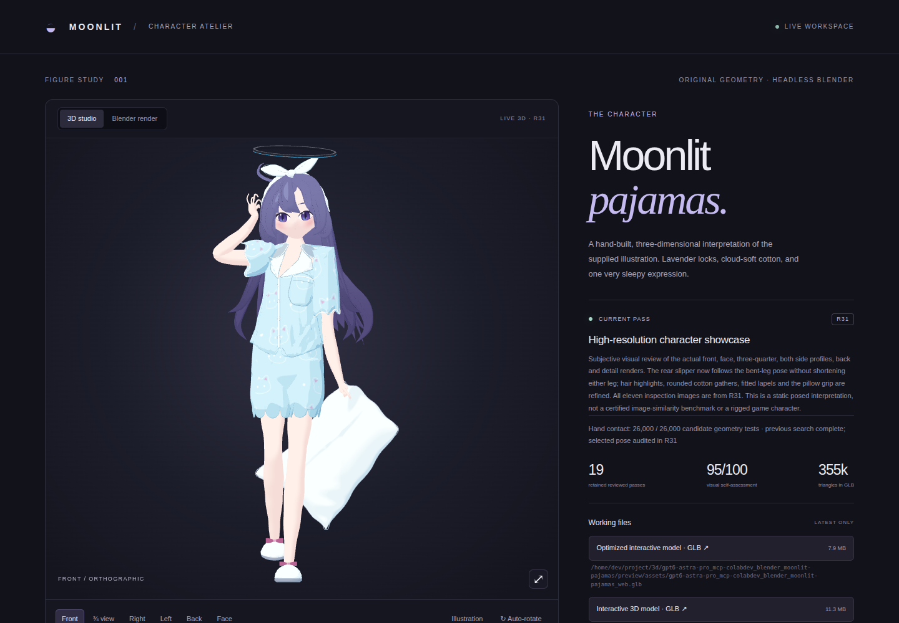
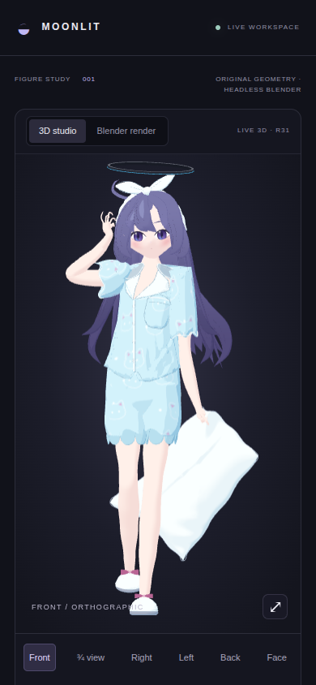

← Character studioR31 · Validation evidence
Export, hand-surface, contact and browser reports: PASS
The visual score is a separate subjective review. These checks do not certify image similarity, animation readiness or AAA quality. Browser tests use desktop and mobile viewport sizes in headless Chromium, not physical phones.
| Viewport | Result | Draw calls | Gallery images | Offscreen frames |
|---|
| desktop | PASS | 26 | 11 | 0 |
| mobile | PASS | 26 | 11 | 0 |

Desktop viewport
/home/dev/project/3d/gpt6-astra-pro_mcp-colabdev_blender_moonlit-pajamas/preview/validation/desktop.png
Mobile viewport
/home/dev/project/3d/gpt6-astra-pro_mcp-colabdev_blender_moonlit-pajamas/preview/validation/mobile.pngReports
Revision integrity and artifact hashes ↗/home/dev/project/3d/gpt6-astra-pro_mcp-colabdev_blender_moonlit-pajamas/preview/assets/release_validation.json
Full and optimized GLB checks ↗/home/dev/project/3d/gpt6-astra-pro_mcp-colabdev_blender_moonlit-pajamas/preview/assets/validation.json
Connected closed hand meshes ↗/home/dev/project/3d/gpt6-astra-pro_mcp-colabdev_blender_moonlit-pajamas/preview/assets/hand_audit.json
Actual headband triangle-distance check ↗/home/dev/project/3d/gpt6-astra-pro_mcp-colabdev_blender_moonlit-pajamas/preview/assets/contact_surface_audit.json
Desktop and mobile browser tests ↗/home/dev/project/3d/gpt6-astra-pro_mcp-colabdev_blender_moonlit-pajamas/preview/assets/browser_validation.json
Geometry commit: 51174593b1f55b41f66b30d7b3ab8d9c5ef92a82